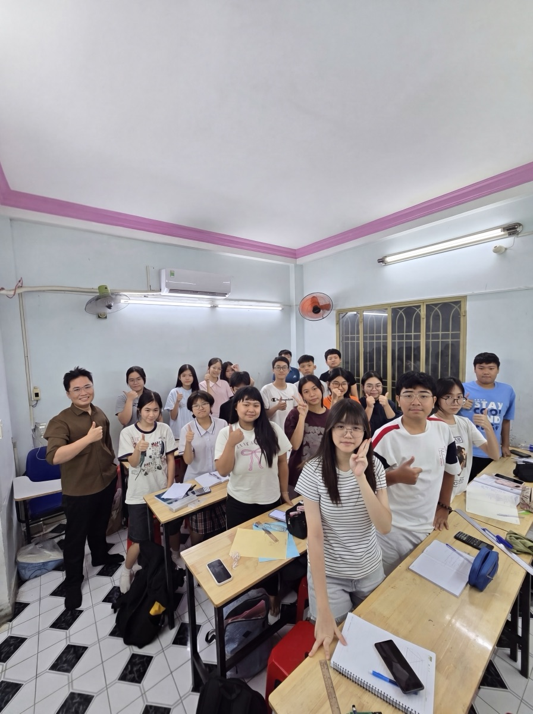

VINHMATH · KẾT NỐI TRI THỨC
Hệ thống dạy
và học toán
thông minh.
Lớp học, luyện tập và công cụ toán học.
Kết nối thầy cô, học sinh và gia đình.
HỆ THỐNG
Mọi bước học tập.
Trong một hệ thống.
Lớp học kết nối
Bài giảng, video và lịch học. Học trên lớp, tiếp nối ở nhà.
Luyện tập có hướng
Luyện đề theo chuyên đề, xem kết quả và nhận phản hồi.
Soạn & giao bài
Tài liệu LaTeX, ngân hàng câu hỏi và kiểm tra cùng một nơi.
Thấy rõ tiến bộ
Bài chấm, nhận xét và báo cáo giúp việc đồng hành cụ thể hơn.
TINH THẦN VINH
Một tầm nhìn.
Bốn giá trị đồng hành.
Hiểu bản chất. Nuôi dưỡng khả năng tự học.
- VisionTầm nhìn
- Nhìn xa hơn một điểm số, hướng đến năng lực học tập lâu dài.
- InquiryKhám phá
- Nuôi sự tò mò, biết đặt câu hỏi và tìm hiểu đến bản chất.
- NurtureNuôi dưỡng
- Đồng hành, khích lệ và tạo điều kiện để mỗi người tiến bộ.
- HumanityNhân văn
- Đặt con người ở trung tâm; công nghệ phục vụ việc dạy và học.
CÙNG ĐỒNG HÀNH
Thầy cô, học sinh, phụ huynh.
Một quá trình học tập.
Giao bài, nhận xét
Giáo viên theo sát từng bước học.
Học, làm, sửa
Học sinh thấy rõ việc cần làm.
Nắm tình hình sớm
Tài khoản phụ huynh cập nhật chuyên cần, bài nộp và kết quả của con.
Hoạt động trên VinhMath
76 học sinh · 6 giáo viên · 7 phụ huynh có hoạt động trong kỳ
24/08–27/09/2026 · Nguồn & cách tính
Ảnh chụp số liệu tổng hợp lúc 11:31 ngày 27/09/2026, từ 24/08 đến thời điểm đó; tuần cuối chưa kết thúc. Chỉ tính tài khoản học sinh, giáo viên và phụ huynh, loại tài khoản quản trị và trợ giảng. Phiên truy cập không phải số người; mỗi tài khoản học sinh chỉ được đếm một lần mỗi tuần. Đây là số liệu sử dụng, không phải khảo sát mức độ hài lòng. Không công khai danh tính hay lịch sử của từng tài khoản.
BÁO CÁO TUẦN · THÁNG
Nhìn rõ tiến bộ.
Trao đổi đúng lúc.
Chuyên cần, bài tập, thời gian tự học và nhận xét trong một báo cáo riêng cho mỗi học sinh.
Phụ huynh theo dõi qua tài khoản của mình, không cần chờ đến cuối tháng. Giáo viên có thể xuất báo cáo thành ảnh để trao đổi thêm.
Dành cho phụ huynhKHÔNG GIAN HỌC SINH
Học đều đặn.
Ghi nhận từng bước.
Mỗi lần hoàn thành,
thêm một dấu mốc.
Bài cần làm, điểm kinh nghiệm và thành tựu giúp học sinh duy trì nhịp học. Phần thưởng khích lệ thói quen; hiểu bài vẫn là mục tiêu.
BIÊN SOẠN TRÊN WEB
Từ mã LaTeX
đến trang bài tập.
Soạn nội dung, xem trước công thức và hình vẽ ngay bên cạnh. Xuất PDF khi tài liệu đã sẵn sàng.
Sắp ra mắt
Ngân hàng đề.
Chọn theo điều cần học.
Tìm câu hỏi theo khối, chương, chủ đề và mức độ; ghép thành tài liệu phù hợp với lớp.
VMTOOLS
Ý tưởng trên trang giấy.
Sống động trên màn hình.

Từ lớp học thật.Cho việc học mỗi ngày.
NGƯỜI ĐỒNG HÀNH
Công nghệ hỗ trợ.
Thầy cô đồng hành.
VinhMath được xây dựng từ những nhu cầu thực tế trong giảng dạy của thầy Điền Võ Thế Vinh: giúp học sinh hiểu bản chất, giúp giáo viên dành nhiều thời gian hơn cho từng người học.
Thầy tốt nghiệp loại Giỏi ngành Sư phạm Toán, Trường Đại học Sư phạm TP.HCM; giảng dạy Toán THCS, THPT, luyện thi và bồi dưỡng học sinh giỏi.
“Học toán không phải là học thuộc công thức, mà là thưởng thức hành trình đi tìm lời giải.”
Lịch các lớp đang mở
Phụ huynh xem khung giờ phù hợp và liên hệ thầy qua Facebook hoặc Zalo để đăng ký cho con.
Ghi chép về việc học toán
Một vài cách học, những câu hỏi nên đặt ra và câu chuyện xây dựng VinhMath. Bài viết của thầy Điền Võ Thế Vinh, đọc tự do.
Đang tải bài viết…